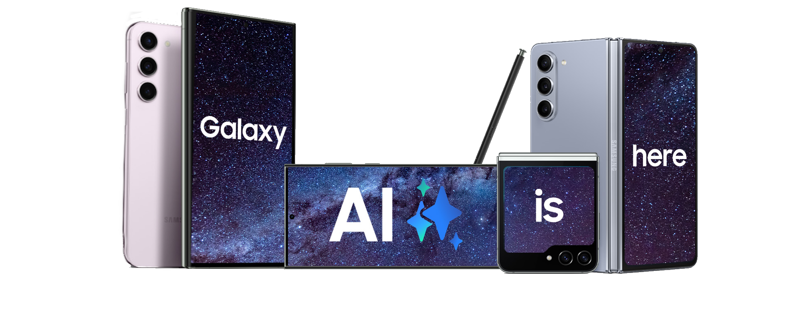
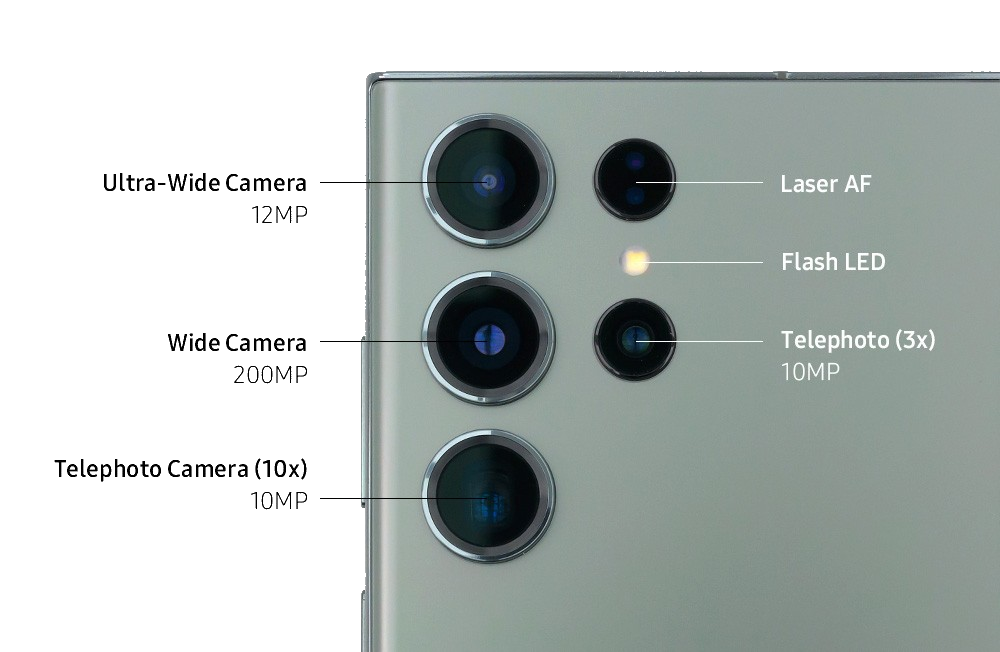
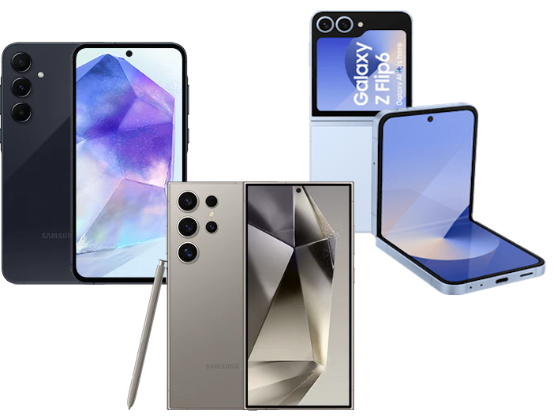
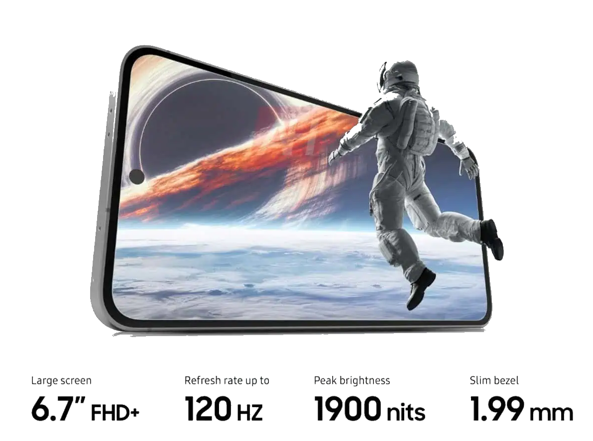
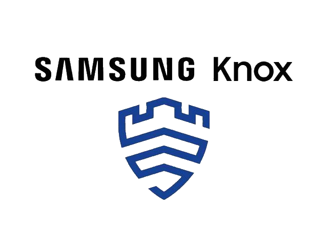

Samsung este un lider global în tehnologie, cunoscut pentru inovațiile sale în diverse domenii, de la smartphone-uri și televizoare până la electrocasnice și dispozitive purtabile. Seria Galaxy este una dintre cele mai apreciate, oferind o gamă largă de telefoane cu tehnologii de vârf, camere performante și ecrane impresionante. Samsung pune accent pe sustenabilitate, eficiență energetică și soluții software inteligente, cum ar fi Samsung Knox pentru securitate și Bixby pentru asistență digitală. Cu o viziune orientată spre viitor, Samsung continuă să îmbunătățească viețile utilizatorilor prin produse de înaltă calitate și tehnologii de ultimă generație.
Samsung reprezintă excelența în inovație tehnologică, fiind un brand care redefinește constant standardele industriei. De la dispozitive mobile la televizoare 8K și soluții pentru locuințe inteligente, Samsung integrează performanță și design modern pentru a oferi o experiență de utilizare superioară. Produsele Samsung sunt apreciate pentru versatilitate și durabilitate, iar tehnologiile avansate, precum ecranele AMOLED, procesoarele puternice și soluțiile 5G, oferă utilizatorilor conectivitate și performanță ridicată.
Pe lângă hardware-ul remarcabil, Samsung dezvoltă și software inovator, oferind soluții integrate precum Samsung Health pentru sănătate și fitness, și ecosistemul Galaxy care conectează perfect dispozitivele tale Samsung. Printr-un angajament continuu față de sustenabilitate și responsabilitate socială, Samsung investește în tehnologii prietenoase cu mediul, reducând amprenta de carbon și promovând reciclarea materialelor. Astfel, Samsung nu doar inovează, ci și contribuie la un viitor mai bun și mai conectat pentru toți.
Performanță AI
Samsung integrează tehnologii de inteligență artificială avansate în dispozitivele sale, îmbunătățind performanța în utilizarea zilnică. AI optimizează procesele, de la eficiența energetică până la personalizarea experienței de utilizare.
 |
Camera Revoluționară
Cu senzori de ultimă generație și funcții precum stabilizarea optică a imaginii și zoom-ul digital avansat, telefoanele Samsung sunt echipate pentru a captura imagini perfecte în orice condiții, fie că este vorba de peisaje spectaculoase sau selfie-uri.
 |
|
Inovații în designul Galaxy
Noile modele Samsung impresionează prin designul elegant și funcțional. Materialele premium și detaliile bine gândite oferă o senzație de rafinament și durabilitate, creând un echilibru perfect între estetică și performanță.
 |
||
Ecran Dynamic AMOLED
Ecranele Dynamic AMOLED oferă o experiență vizuală excepțională, cu culori vibrante și un contrast uimitor. Fie că te uiți la filme, te joci sau citești, calitatea ecranului transformă orice activitate într-o experiență captivantă.
 |
Securitate Knox
Platforma Samsung Knox protejează datele tale personale și profesionale, oferindu-ți un nivel ridicat de securitate, de la criptarea datelor până la protecția împotriva atacurilor cibernetice..
 |
Samsung Galaxy este o serie de smartphone-uri, tablete și alte dispozitive produse de Samsung.
Ecranele AMOLED oferă culori mai vii, un contrast mai ridicat și un consum mai redus de energie decât ecranele LCD.
Samsung oferă soluții de securitate avansate, inclusiv Samsung Knox, care protejează dispozitivul și datele utilizatorului.
Poți actualiza software-ul dispozitivului tău Samsung Galaxy accesând "Setări" > "Actualizare software" > "Descarcă și instalează".
Samsung DeX îți permite să conectezi dispozitivul Galaxy la un monitor sau un PC și să ai o experiență de tip desktop. Poți folosi DeX cu un cablu HDMI sau wireless pe anumite dispozitive compatibile.